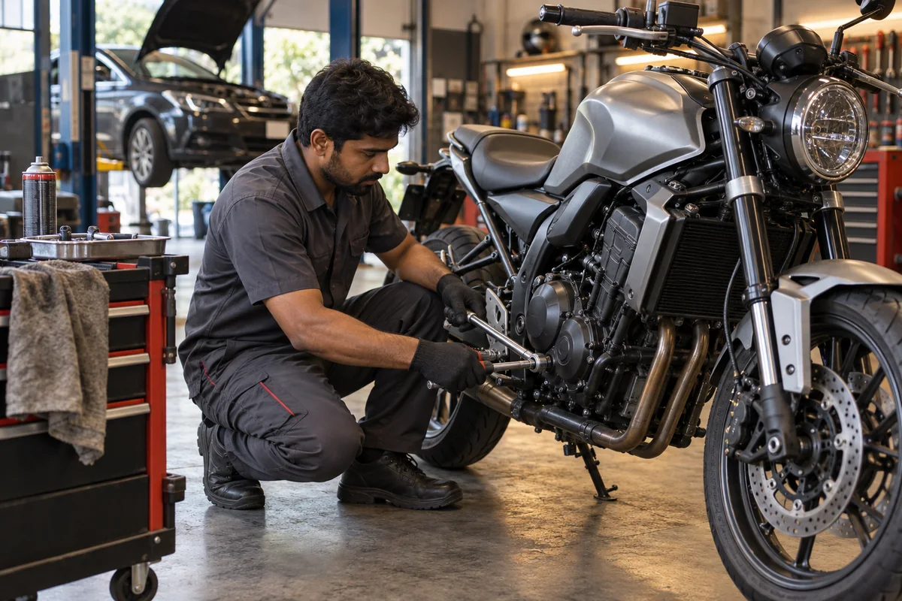
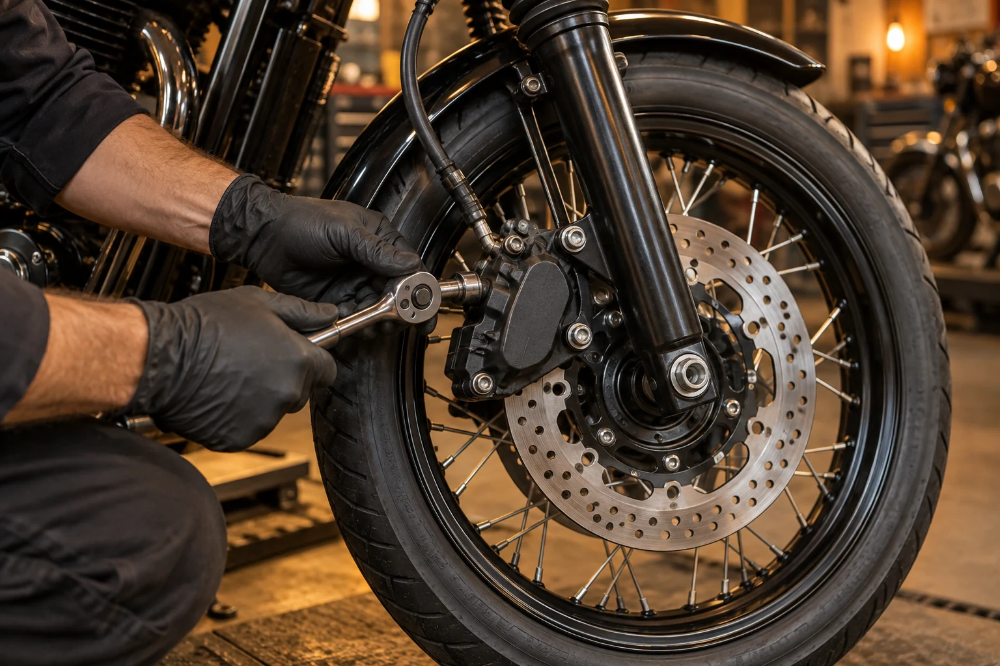
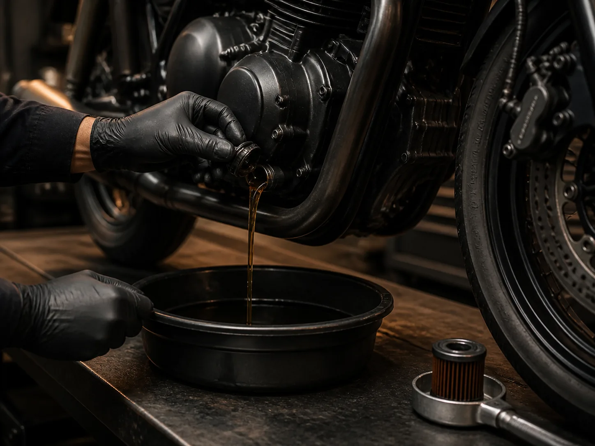
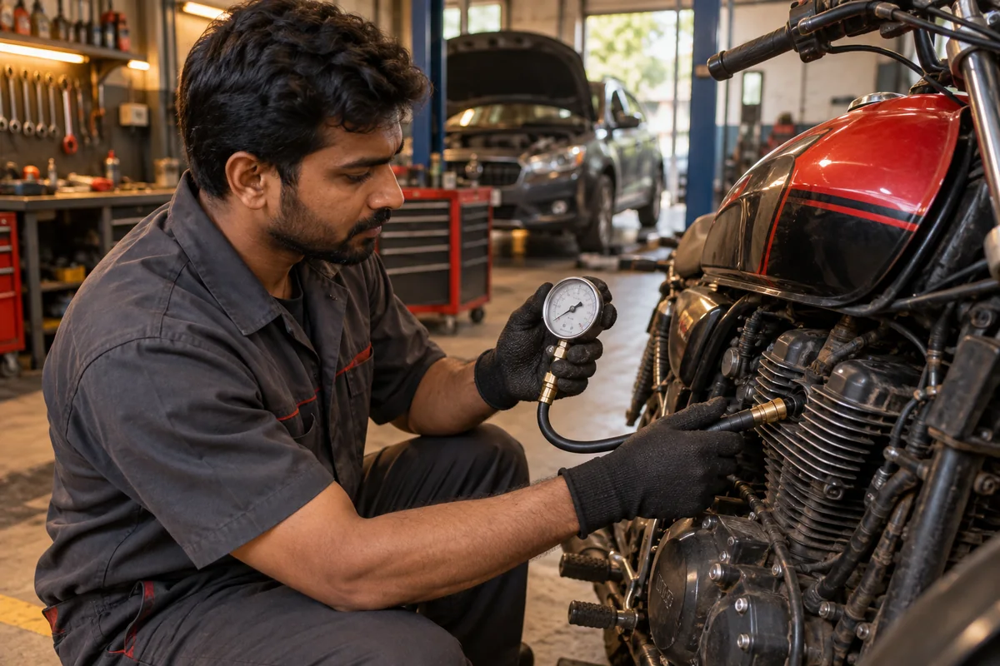
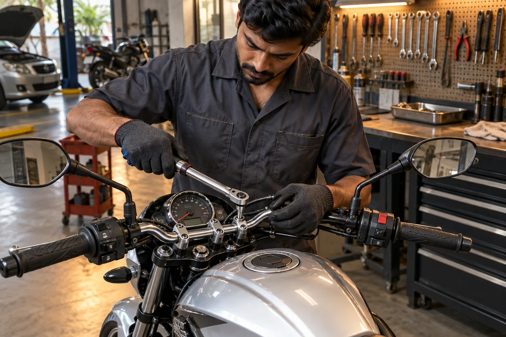

Routine 42-Point Service
Comprehensive preventive maintenance across fluids, filters, fasteners, spark plug, chain tension, and controls, finished with a thorough road test.
Book ServiceFrom 42-point scheduled maintenance and precision diagnostics to brake overhauls and drivetrain tuning. Honest advice, transparent estimates, and certified workshop care.

We combine a practical inspection-first process with clear approvals. No mystery work, no vague invoices and no replacing a part before you understand why.
Every service is carried out in dedicated workshop bays with calibrated tooling, genuine fluids, and transparent parts approval before fitting.

Comprehensive preventive maintenance across fluids, filters, fasteners, spark plug, chain tension, and controls, finished with a thorough road test.
Book Service
Live sensor stream scans, OBD-II fault extraction, cylinder leak-down tests, and stator charging tests to eliminate mystery issues and warning lights.
Book Diagnostics
Pad friction material measurement, dial runout checks, ultrasonic slider pin cleaning, and high-boiling DOT 4/5.1 pressure bleed for crisp lever bite.
Book Brake Service
Laser sprocket-to-countershaft collinearity, 10-link pitch elongation checks, O-ring safe solvent degreasing, and hydrophobic synthetic wax lube.
Book Chain Service
Scratch-free pneumatic tyre mounting, high-speed dynamic wheel balancing, new valve stems, and cold pressure setup for maximum highway stability.
Book Tyre Service
Warm gravity drain, OEM filter replacement, fresh annealed copper crush washer, and factory-certified viscosity synthetic oil for smooth clutch action.
Book Oil ChangeEvery motorcycle entering Ironlane undergoes calibrated physical measurement before tools touch a bolt. No generic checklists—just transparent tolerances and verified road readiness.

Before adjusting fueling or recommending engine work, we measure mechanical cylinder health under warm operating conditions. This pinpoints carbon fouling, tight tappets, and air leaks immediately.
Measures ring sealing and valve seat leakage before tear-down.
Verified with calibrated feeler gauge and digital spark kV meter.
Zero-deadzone potentiometer sweep test for hesitation-free throttle.
Bengaluru Traffic Note: Stop-and-go thermal cycles break down valve seat seals faster than open highway riding. Regular clearance checks prevent burnt exhaust valves.
Braking power isn't just pad thickness—it's hydraulic line integrity, caliper slide freedom, and rotor flatness. We check every millimeter with calibrated digital tooling.
Eliminates lever pulsation and uneven disc surface glazing.
Tests DOT fluid water contamination percentage to prevent vapor lock fade.
Chemical ultrasonic de-glaze to restore crisp initial lever bite.
Monsoon Note: Rain water and road grime breach caliper dust seals quickly, causing sticky pistons and premature brake fade. Annual fluid flush is safety-critical.
Factory swingarm hash marks can be off by up to 3mm. We use laser projection along the sprocket plane so power delivery is direct, quiet, and wear is perfectly centered.
Eliminates side-plate friction and premature sprocket shark-toothing.
Detects hidden link binding, tight spots and bush wear early.
Prevents harsh transmission shock during quick clutch release.
Rider Note: A misaligned chain robs up to 2 BHP and wears out countershaft bearings. Laser tensioning ensures silky smooth throttle pickup.

Handlebar shudder at 60 km/h is almost always worn head race bearings or fork stiction. We measure steering drag with a spring scale and verify electrical charging health under full lighting load.
Spring-balance pull test guarantees stable high-speed tracking.
High-load voltage test prevents stranded battery failures.
Torque wrench certified to ISO 6789 specifications on all critical fasteners.
Pothole Impact Note: Speed breakers and deep potholes hammer the lower cone bearing. We detect micro-pitting long before tank-slappers occur.
You stay in control from the first inspection to the final road check.
| Popular service | From | Typical time |
|---|---|---|
| Routine service | ₹800 | 2–3 hours |
| Oil change | ₹400 | 45–60 min |
| Brake service | ₹600 | 1–2 hours |
| Diagnostics | ₹500 | 60–90 min |
Guide prices exclude model-specific parts. We confirm the estimate after inspection.
Open the full price guideRecent demo reviews reflect the experience this template is designed to communicate: clarity, craft and dependable turnaround.
“The team found the vibration, explained the fix in plain language and had the bike back before the evening commute.”
“Fair quote, clean work and no pushy add-ons. The brakes feel consistent again and the handover notes were genuinely useful.”
“They traced an intermittent fault two other garages missed. Updates were on time and the final bill matched the approval.”
Choose a service, tell us about the bike and we will confirm a workshop slot.